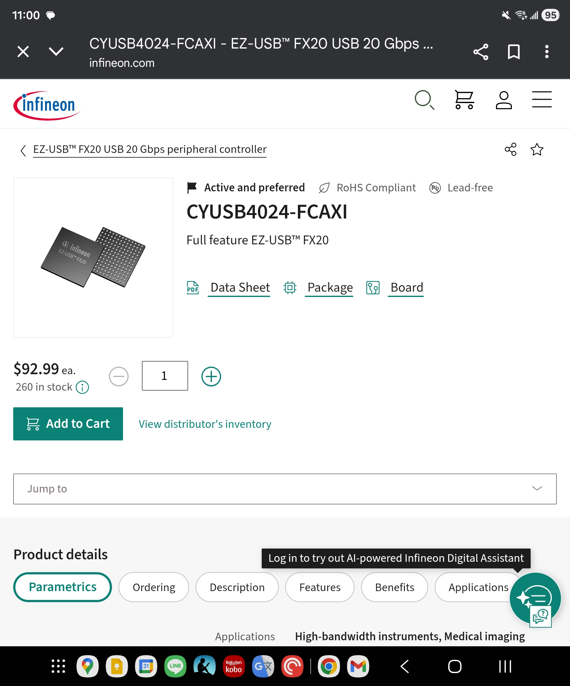
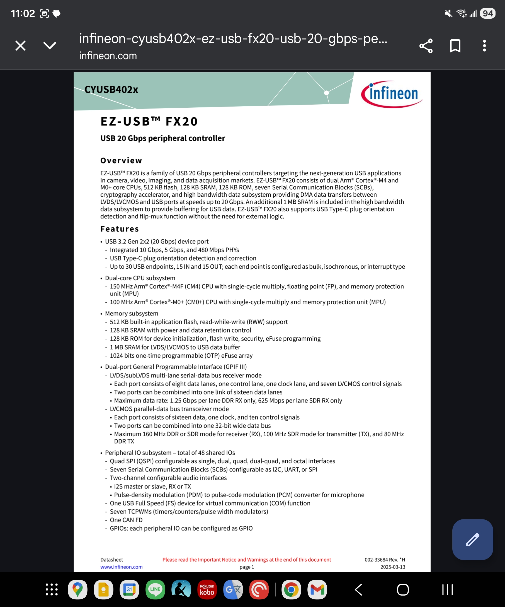

Resources
Tools to Solve Complex Engineering Problem
- Clean Code / Gaphics
- Mob Programming
- Git / Github
- Modulization / Standard Connector
Software Engineering 🌐 🎬 💾 📚 📑
Mob Programming

Mob Programming woodyzuill.com.
Mob Programming Example Youtube Video.
Agile Firmware and Hardware Design
Embedded System
Design circuit boards with code
Design circuit boards with code!
✨ Get software-like design reuse 🚀,
validation, version control and
collaboration in hardware;
starting with electronics ⚡️
Design circuit boards with code!
No RTOS
Yes RTOS
- FreeRTOS
- Zephyr
- RT-Thread
Raspberry Pi Documentation
Bead Usage
errite-beads-common-applications-and-considerations
Fast Serial IO Serdes-LVDS
High Speed PCB Design
Some C Stuff
.h file
pin.h : store pin name define and hardware related constant
constant.h : store constant related to software
data.h : store software related general data structure
error.h : error code and error message
global.h : place to define global access variable
log.h : Macros about log
c naming convention
Variable start with Lowercase
Function, Enum, Class, Class start with Uppercases
Parameters start with underscore
Macro start with all uppercase with underscore between words
c others stuff
comment closing curly braces
variable suppose to have min and max
c function error handling
1st parameter is alwasy *error
setjmp longjmp 用法
#include <stdio.h>
#include <setjmp.h>
jmp_buf buf;
void nested_function() {
printf("在深層函數中，發生錯誤...\n");
longjmp(buf, 1); // 跳回到 setjmp 處，並傳回 1
printf("這行不會被執行\n");
}
int main() {
// 1. 設定跳轉點
if (setjmp(buf) == 0) {
printf("準備呼叫深層函數\n");
nested_function();
} else {
// 2. 當從 longjmp 跳回時
printf("已從錯誤中恢復\n");
}
return 0;
}
C Header File Example
// 1. Include Guards (Essential to prevent multiple inclusions)
#ifndef MY_HEADER_H
#define MY_HEADER_H
// 2. Includes (Only necessary ones, like standard types)
#include <stdint.h>
// 3. Macros and Constants
#define MAX_BUFFER 1024
// 4. Data Type Definitions (Structures, Enums, Typedefs)
typedef struct {
int id;
char name[20];
} User;
// 5. Function Prototypes (Public interface)
void ProcessUser(User* u);
int GetStatus(void);
// 6. External Global Variables (If shared)
extern int globalConfig;
#endif // MY_HEADER_H
FPGA 🌐 🎬 💾 📚 📑
FPGA DFX
📚Dynamic Function eXchange Licensing
FPGA Tandem
📚UltraScale+ Devices Integrated Block for PCI Express Product Guide (PG213)
Generates Makefiles for FPGA EDA
Generates Makefiles for FPGA EDA
Riffa
RIFFA_A_Reusable_Integration_Framework_for_FPGA_Accelerators
https://kastner.ucsd.edu/wp-content/uploads/2014/04/admin/fpl-riffa2.pdf
https://github.com/KastnerRG/riffa
XDMA
SYZYGY Interface
HLS
https://www.acri.c.titech.ac.jp/wordpress/
https://github.com/acri-room/hls-challenge-labs
https://acri-vhls-challenge.web.app/
Manta: A Configurable and Approachable Tool for FPGA Debugging and Rapid Prototyping
https://fischermoseley.github.io/manta/
DDR3 Memory

7 Series Compare
Valid Ready Handshake use Verilog
Verilog Signal Naming Guide
| Type of Signal | Suffix Prefix (optional) | Example |
|---|---|---|
| Clock signals | clk or _ck | sys_clk, clk |
| Reset signals | _rst or _reset | cpu_reset, rst |
| Active-low signals | _n or _x | reset_n, enable_x |
| Enable signals | _en | write_en |
| Input ports | i or _in i or in_ | data_in, i_valid |
| Output ports | o or _out o or out_ | data_out, o_ready |
| Registered signals | _reg o _r | count_reg, state_r |
| Next state signals | n_ | n_state |
Verilog Name Convention
- Port : name_in, name_out
- Signal : s_name, s_name_n, s_name_next
- Variable : v_name, v_name_n
- Constant : c_name
USB3 DAQ
USB3 FIFO Interface for DAQ use FT60X and Cypress FX3
Korean Blog about FT601
USB3.2 Interface for DAQ Cypress FX20


ONIX
Onix Breakout Board Github
DAQ
Intan
Use hdmi video capture as data input
A 2 GHz oscilloscope for everyone
https://www.crowdsupply.com/andy-haas/haasoscope-pro
https://github.com/drandyhaas/HaasoscopePro
DAQ Sync
data-acquisition-synchronisation
Sync Expander and Sync Hub
Harp on Pico
Wireless Headstages
AD5940 Collections
RJ45 has No Ground without Transformer Coupling
Design Review
PCB Review
supply voltage
logic level
gpio fn
pull up , pull down
protection ckt
power budget
battery low condition
race condition
connectors
unused pin check
termination
tx rx check
reset
Mistakes People Make When Designing Prototype PCBs
-
Designing for Production: • Design the first PCB expecting it to fail, focusing on functionality testing. • Size and shape considerations can come later; prioritize testing various features.
-
No Test Points: • Lack of test points hinders debugging and fixing mistakes. • Test pads for common functionalities reduce the risk of blocking progress.
-
No Power or Diagnostic LEDs: • Diagnostic lights for voltage levels and operations save time in identifying simple mistakes.
-
Overcrowding Components: • Avoid packing components tightly during prototyping; leave space for adjustments. • Keep passives relatively large for easier removal during testing.
-
Underutilizing Silk Screen: • Clearly label components on the silk screen for easy assembly and orientation. • Ensure markings are readable on the smallest boards.
-
Not Using Isolation Jumpers: • Incorporate zero-ohm resistors or cutable jumpers for easy isolation during testing. • Facilitates methodical bring-ups and simplifies troubleshooting.
-
Not Breaking Out Unused GPIOs: • Break out additional GPIOs for testing and fixing mistakes without ordering a new PCB. • Adds flexibility for rewiring components or integrating external modules.
-
UART Mixups: • Ensure correct pairing of transmit and receive pins in UART components. • Use jumpers or specific designs to easily correct mistakes.
-
Locking Into I2C Addresses: • Provide options to change I2C addresses using resistors for flexibility. • Prevents the need for a new PCB revision due to address conflicts.
-
Separate Power PCB: • Consider splitting the design into multiple boards, especially separating power. • Enables testing power solutions independently without scrapping the entire PCB.
-
Choosing Labeled Surface Mount Resistors: • Opt for labeled surface mount resistors for easier visual inspection and testing.
-
Verify Footprints: • Check dimensions on the data sheet against PCB footprints in your design software. • Prevents ordering the wrong footprint for components.
-
Check Parts Availability: • Consider part availability before designing the circuit. • Speculatively order critical parts before PCB production to mitigate shortages.

PCB Bypass Cap


🌐https://www.protoexpress.com/blog/decoupling-capacitor-use/
🌐https://www.protoexpress.com/blog/decoupling-capacitor-placement-guidelines-pcb-design/
Digilent Analog Discovery 2 Schematics
Digilent Analog Discovery 2 Schematics
Math
Probabilistic numerics
https://www.probabilistic-numerics.org/